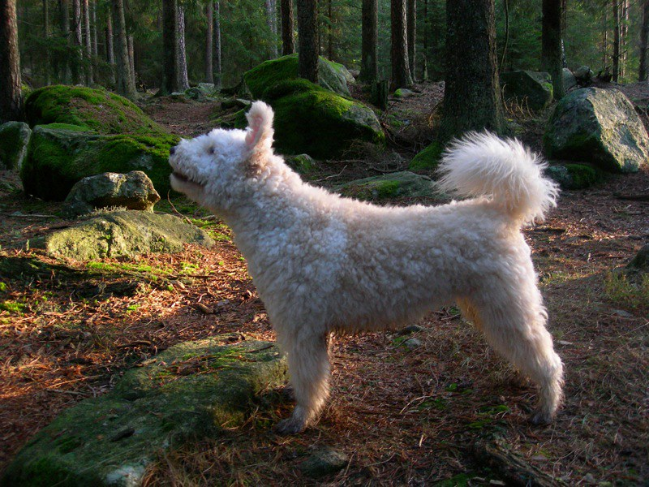

| Kutya fajták | Erdélyi kopó | Komondor | Kuvasz | Magyar vizsla | Mudi | Puli | Pumi |
|---|

A pumi őshonos kutyafajtánk, hazánk területén, a 17-18. század folyamán alakították ki a puli és a merinói juhnyájakat hazánkba kísérő terrier jellegű pásztorkutyák kereszteződéséből. Így jött létre a pulinál rövidebb szőrű, lebicsakló fülű terelőkutya, amely gyorsan népszerű lett a pásztorok között, hiszen minden jószág mellett használható volt. A pumi elnevezést, amely valószínűleg Pomeránia nevéből származik, először 1795-ben írták le, majd Pethe Ferenc is megemlíti a Természet Históriája című művében 1815-ben. Első ismert tenyésztője gróf Festetics Sámuel volt.
A pumi közepesnél kisebb méretű kutya, amely megjelenésében le sem tagadhatná a terrier ősöket. Szőrzete 4–7 cm hosszú, tincses, nem nemezesedik, de rendszeres ápolást igényel: ajánlatos olykor trimmelni és ollóval igazítani. Leggyakrabban a szürke különböző árnyalataiban fordul elő, de van fehér, fekete és fakó színű is.
A pumi egy négy lábon járó vitalitásbomba, amelynek energiája kimeríthetetlen. Rendkívül éber, véleményének mindig hangos csaholással, ugatással ad hangot, amely szokása a szomszédok tetszését nem mindig nyeri el. Nagyfokú mozgásigényét leginkább kertes házban képes kielégíteni, lakásban csak az tartsa, aki naponta több órát tud rá szánni. Gyorsan tanul, hihetetlenül mozgékony, ideális a különböző kutyás sportok űzésére. Szeret szerepelni, a figyelem középpontjában lenni, „bohóckodni”, ezért elsősorban aktív, mozgalmas életet élő családoknak ajánlható.